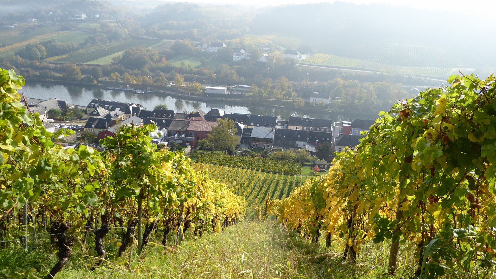
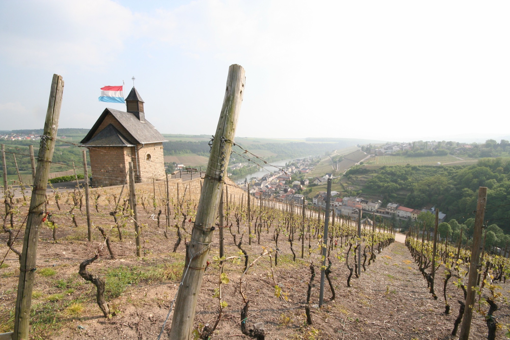
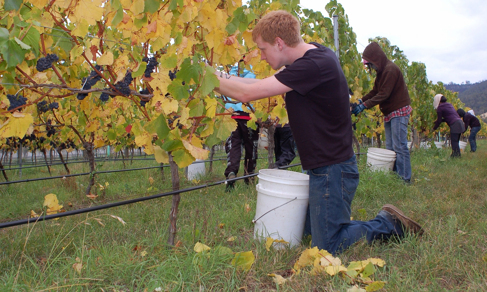
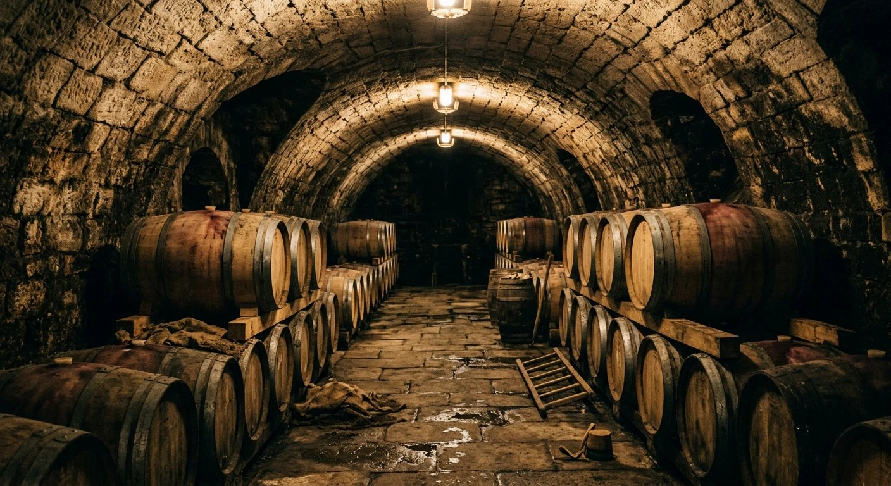
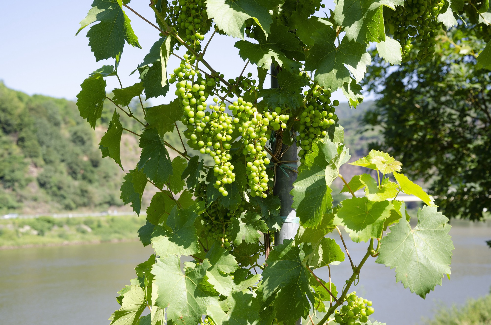

Le vignoble

La pente
C'est la parcelle du haut : 62 % de pente, vingt centimètres de terre sur la dalle de Muschelkalk, des ceps de 1962 menés en gobelet. Le tracteur n'y monte pas — treuil, ou dos. La racine du Riesling met quinze ans à fissurer la roche, puis elle y reste.
Autour de lui, cinq autres lieux-dits s'étagent entre la rive et le plateau : Am Ufer sur les alluvions, Elterberg sur les marnes, Nussbaum et Palmberg sur le calcaire, Uewer Bierg tout en haut, planté en 2016 pour les étés qui viennent.
Ce que chaque parcelle donne

La conduite
Enherbement un rang sur deux — le rang couvert retient la terre les jours d'orage, le rang travaillé laisse la racine descendre. Ni désherbant ni insecticide ; confusion sexuelle contre l'eudémis depuis 2008, cuivre plafonné bien sous la norme.
Et la vendange se fait en six passages : on ne ramasse que ce qui est mûr, quitte à remonter la semaine suivante. Dans le Koeppchen, ça dure du 25 septembre à la Toussaint.
Le carnet des millésimesLe chai · creusé en 1911

Par gravité
Le quai de réception est à hauteur de vigne : la vendange descend par gravité, sans pompe. En dessous, le pressoir — grappes entières, pression lente, quatre heures. Encore en dessous, à onze mètres, la salle des foudres : onze degrés été comme hiver, sans climatisation, sans capteur, sans rien. Elle a été creusée en 1911 par des gens qui n'avaient pas l'électricité, et c'est toujours le meilleur régulateur du domaine.
Ce qui en sort
Le climat bouge
En 1990, la vendange commençait le 8 octobre ; elle commence maintenant fin septembre. Le plateau d'Uewer Bierg, deux degrés plus frais, donnera son premier grand vin vers 2035.